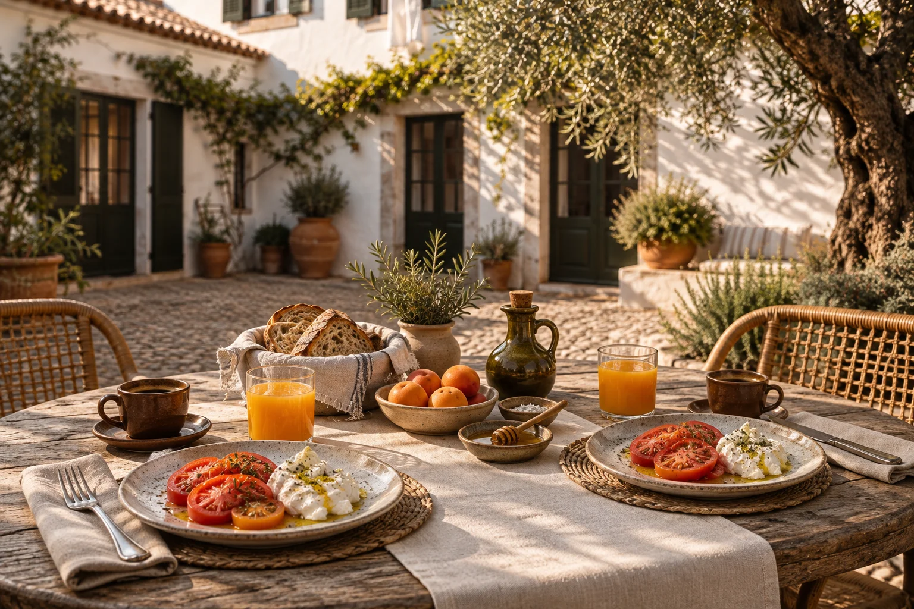

Good mornings.
Easy evenings.
Food at Tidefold is part of staying in a small house. Breakfast is included for every guest. On selected evenings, our kitchen prepares a short supper menu for residents.

A table worth
taking time over.
Start with bread, fruit and something warm from the kitchen. Help yourself to coffee, tea or juice; eggs are prepared when you ask. In fine weather we lay the courtyard tables. On cooler mornings, breakfast moves indoors.
There is no need to add a breakfast package to your room. It is already included for every registered guest, on every morning of your stay.
- Breakfast
- Daily, 08:00–10:30
- House supper
- Tuesday–Saturday, 19:00–21:00
- Who can join
- Resident guests only
A few good things,
made with care.
No endless menu.
Our small kitchen cooks for the house, not for a busy restaurant floor. A meat dish and a plant-based main keep supper simple. Arrange a place with the host before 16:00, so the kitchen can prepare just enough.
If you have dietary needs, discuss them before making plans. We work in one small kitchen and cannot guarantee an environment free from any allergen.